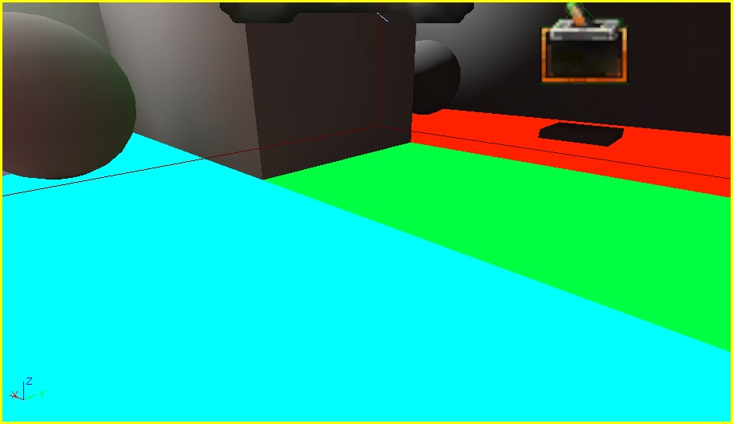
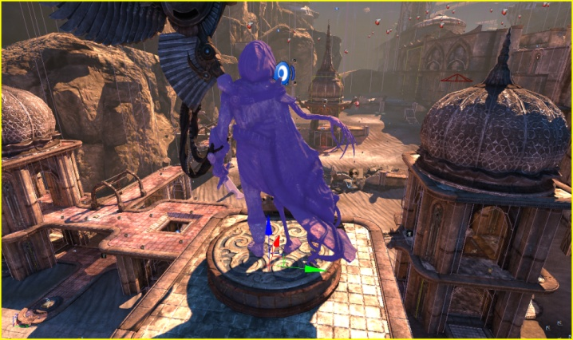
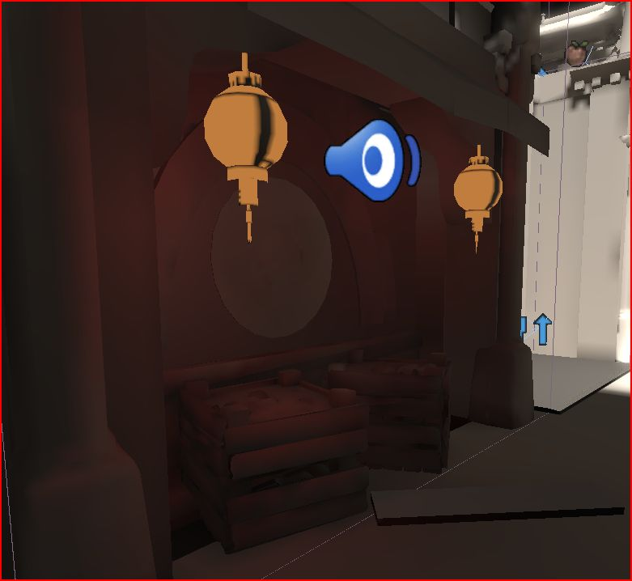
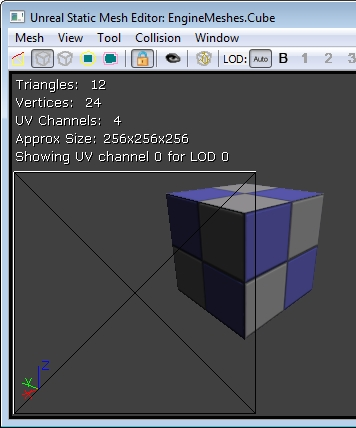
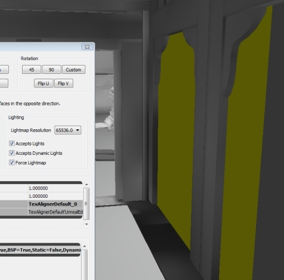
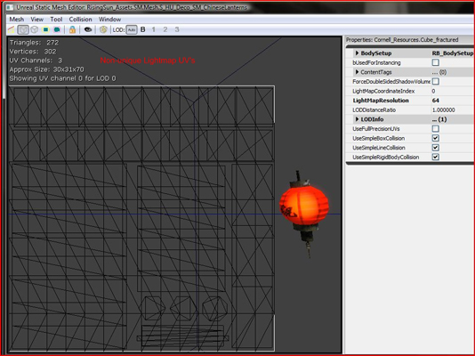
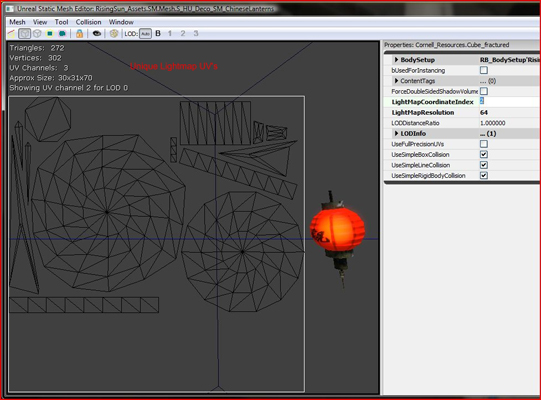
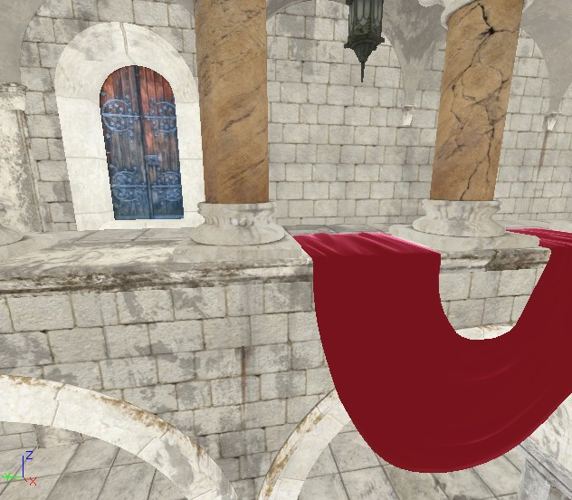

UDN
Search public documentation:
LightmassToolsCH
English Translation
日本語訳
한국어
Interested in the Unreal Engine?
Visit the Unreal Technology site.
Looking for jobs and company info?
Check out the Epic games site.
Questions about support via UDN?
Contact the UDN Staff
日本語訳
한국어
Interested in the Unreal Engine?
Visit the Unreal Technology site.
Looking for jobs and company info?
Check out the Epic games site.
Questions about support via UDN?
Contact the UDN Staff
Lightmass 工具
文档变更记录: 由 Daniel Wright 创建。
概述
工具
静态网格光照信息
该对话框允许用户在他们的静态网格上快速比较顶点与纹理贴图。此外，因为这个系统需要一个已知的世界状态来应用它做出的更改，所有进行中的关卡动态载入必须在可以保存检查点之前平滑，需要 LD 在任何动态载入或风险停顿中间装进检查点。 在 UnrealEd‘视图’ > ‘光照信息’菜单中选择‘静态网格光照信息’打开这个对话框。
按钮
- Close - 会关闭对话框。
- Rescan all levels - 会为静态网格重复扫描地图中的所有关卡，然后插入到列表中。
- Rescan selected levels - 会为静态网格重复扫描在 Level Manager（关卡管理器）选项卡中选择的关卡。
- Rescan current level - 只会为静态网格重复扫描当前关卡。
- Go To - 跳转到关卡中已选的网格。
- Sync Browser - 将内容浏览器同步到已选的网格源 StaticMesh（静态网格）。
- Swap - 会替换已选项的贴图方法。
- Swap Ex... - 会替换已选项的贴图方法，提示用户输入一个可以覆盖贴图的分辨率。
- Set to Vertex - 会将已选项设置为使用 Vertex（顶点）贴图。
- Set to Texture - 会将已选项设置为使用 Texture（纹理）贴图。
- Set to Texture Ex... - 会将已选项设置为使用 Texture（纹理）贴图，提示用户输入可以覆盖的分辨率。
列
- Level - 静态网格 actor 所在的关卡。
- Actor - 静态网格 actor 的名称。
- Static Mesh - actor 的源静态网格。
- Current Type - 该项实用的当前贴图类型（顶点或纹理）。
- Has Lightmap UVs - 表示网格是否含有光照贴图 UV。
- Resolution - 用于计算已使用的纹理光源/阴影贴图内存的分辨率。
- Texture LightMap (Bytes) - 如果网格使用的是文理贴图的光照贴图，那么将使用的内存量。
- Vertex LightMap (Bytes) - 如果使用的是顶点贴图类型的光照贴图，那么网格会使用的内存量。
- Num LightMap Lights - 有助于网格上的光照贴图生成的光源数。
- Texture ShadowMap (Bytes) - 如果使用的是纹理贴图类型的阴影贴图，那么网格将使用的内存量。
- Vertex ShadowMap (Bytes) - 如果使用的是顶点贴图类型的阴影贴图，那么网格将使用的内存量。
- Num ShadowMap Lights - 有助于网格上的阴影贴图生成的光源数。
光照构建信息
LightingBuildInfo（光照构建信息）对话框会显示有关最后完成的光照构建的信息，可以帮助追查出‘问题资源’。 它会显示以下信息：Lighting Timings（光照时机）
光照构建后，在下面的 Swarm 屏幕截图中，您可以看到这里的有些贴图比其他长。 这由相对较长的蓝色‘进行中贴图’线表示。
在这种情况下，光照构建信息的‘% 光照时间’栏可能可以用来追查出引起问题的对象。要打开该对话框，请从 UnrealEd 的‘视图->光照’中选择‘Lighting Build Info（光照构建信息）’。
这由相对较长的蓝色‘进行中贴图’线表示。
在这种情况下，光照构建信息的‘% 光照时间’栏可能可以用来追查出引起问题的对象。要打开该对话框，请从 UnrealEd 的‘视图->光照’中选择‘Lighting Build Info（光照构建信息）’。
StaticMesh（静态网格物体）示例
以下示例会显示在 LightmassDayBright 中构建光照后的 Lighting Build Info（光照构建信息）对话框。 ‘% Lighting Time（光照时间）’会显示每个贴图占用的整体光照时间的百分比。在这个示例中，StaticMeshActor_160 占用了最高百分比。双击该项将会带您来到关卡中令人讨厌的网格物体。
‘% Lighting Time（光照时间）’会显示每个贴图占用的整体光照时间的百分比。在这个示例中，StaticMeshActor_160 占用了最高百分比。双击该项将会带您来到关卡中令人讨厌的网格物体。
 选择了对象后，我们可以浏览它的属性，来确定这里是否存在问题。:
选择了对象后，我们可以浏览它的属性，来确定这里是否存在问题。:
 高亮显示的属性 bOverrideLightMapRes 没有勾选。这表示源 StaticMesh（静态网格物体）会控制这个分辨率。浏览属性查找我们看到的 'SponzaNew_Resources.SM_Ivy_Sponza_01_Branches' ：
高亮显示的属性 bOverrideLightMapRes 没有勾选。这表示源 StaticMesh（静态网格物体）会控制这个分辨率。浏览属性查找我们看到的 'SponzaNew_Resources.SM_Ivy_Sponza_01_Branches' ：
 我们可以看到这个静态网格物体的 LightMapResolution 相当高 - 512。因为这个静态网格物体可以被场景中的其他对象使用，所以我们可以通过在 StaticMeshComponent（静态网格物体组件）上覆盖光照贴图分辨率来解决这个问题。勾选 bOverrideLightMapRes 选项并将 OverriddenLightMapRes 值设置为 128，这样会使计时发生以下改变：
我们可以看到这个静态网格物体的 LightMapResolution 相当高 - 512。因为这个静态网格物体可以被场景中的其他对象使用，所以我们可以通过在 StaticMeshComponent（静态网格物体组件）上覆盖光照贴图分辨率来解决这个问题。勾选 bOverrideLightMapRes 选项并将 OverriddenLightMapRes 值设置为 128，这样会使计时发生以下改变：

光照贴图类型的表面集合
构建光照时，为了在共面的表面上减少光照贴图接缝，引擎会将不同的 BSP 部分融合到一起生成光照贴图。为了在 Lighting Build Info（光照构建信息）对话框中体现这种情况，创建一个临时的对象代表构成该贴图的画刷的集合。这个对象是一个 LightmappedSurfaceCollection（光照贴图表面集合）。 双击（或者按下“跳转到”按钮）这些项其中的一个会在编辑器视口中出现以下选项： 虽然这可能看起来选择的是一个独立的 BSP 部分，但是实际上是三个不同的表面，在下面用不同的颜色高亮显示。
虽然这可能看起来选择的是一个独立的 BSP 部分，但是实际上是三个不同的表面，在下面用不同的颜色高亮显示。

要减少为光照贴图表面集合构建光照所需的时间，减小表面分辨率或通过为它们赋予稍有不同的 LightmassSettings（Lightmass 设置）强制它们分别构建光照，例如，赋给一个表面 DiffuseBoost 值为 1.0（默认值），而赋给相邻的表面的 DiffuseBoost 值为 1.001。未映射的贴图像素和内存消耗
光照构建信息对话框包含两个也包含用于追查到无效光照贴图的有效内存附加列。‘未映射的内存消耗 (kB)’列会为对象显示由未映射的贴图像素浪费的内存量。
‘% 未映射的贴图像素’列会为没有映射的对象光照贴图显示贴图像素的百分比。 以在 VCTF-Sandstorm 上构建光照为例，打开‘光照构建信息’对话框并单击‘未映射的内存消耗’列，按照内存消耗值由高到低的顺序排列。以下是结果：
 跳转到场景中的对象，我们会看到以下情况：
跳转到场景中的对象，我们会看到以下情况：

右击这个静态网格物体并选择‘在内容浏览器中查找’，将会在内容浏览器中为这个 actor 选中这个 StaticMesh（静态网格物体）。在静态网格物体编辑器中将其打开，然后启用 UV 覆盖层，我们会看到以下情况： 就像您看到的一样，这样的布局有一点浪费 - UV 覆盖层中几乎 50% 的空间是空的。为这个网格物体修补光照贴图 UV，这将可以更有效率地使用光照贴图内存。
就像您看到的一样，这样的布局有一点浪费 - UV 覆盖层中几乎 50% 的空间是空的。为这个网格物体修补光照贴图 UV，这将可以更有效率地使用光照贴图内存。
问题解决
光照贴图错误颜色
如果在 Preview（预览）或 Medium（媒介）质量构建中 Lightmass 出现了内容错误，那么它会使用错误的颜色覆盖光照贴图的颜色。 在高级或者产品质量构建中，Lightmass 将会跳过这个错误颜色，然后就好像没有错误发生一样计算光照，这可能会有意想不到的结果。 Non-unique lightmap UV's - 受贴图像素影响将是橙色。 这意味着有多个三角形与贴图像素的中心重叠，所以贴图像素无法正常进行照明，因为它同时在两个地方被启动。 解决方案是修改美工创建的光照贴图 UV，或者是在这个静态网格物体编辑器中生成新的 UV，然后设当设置 LightMapCoordinateIndex（光照贴图坐标索引）。 左边的图中，将橙色赋给使用非唯一光照贴图 UV 的贴图像素。在中间，是一个使用非唯一 UV 的网格物体，显示立方体所有 6 个面如何在 UV 空间中重叠。 右边的图中，一个相似的网格物体，使用的是唯一 UV，在 UV 空间中没有三角形重叠。

 Wrapping lightmap UV's - 受贴图像素影响将是绿色。 这会在静态网格物体的光照贴图 UV 不完全在 [0, 1] 范围内时发生，也就是说它们会折叠。 解决方案是修改美工创建的光照贴图 UV，或者是在这个静态网格物体编辑器中生成新的 UV，然后设当设置 LightMapCoordinateIndex（光照贴图坐标索引）。
Wrapping lightmap UV's - 受贴图像素影响将是绿色。 这会在静态网格物体的光照贴图 UV 不完全在 [0, 1] 范围内时发生，也就是说它们会折叠。 解决方案是修改美工创建的光照贴图 UV，或者是在这个静态网格物体编辑器中生成新的 UV，然后设当设置 LightMapCoordinateIndex（光照贴图坐标索引）。
 Unmapped texels on static meshes - 静态网格上的黄色贴图像素通常表示隐含的三角形在光照贴图 UV 空间中简并（0 区域）。 这意味着两个或多个三角形的顶点有相同的光照贴图 UV，而且三角形有 0 光照贴图区域。 最好是像这样将光照贴图 UV 设置为节省贴图控件，记住在那些三角形上的光照将是错的。
Unmapped texels on static meshes - 静态网格上的黄色贴图像素通常表示隐含的三角形在光照贴图 UV 空间中简并（0 区域）。 这意味着两个或多个三角形的顶点有相同的光照贴图 UV，而且三角形有 0 光照贴图区域。 最好是像这样将光照贴图 UV 设置为节省贴图控件，记住在那些三角形上的光照将是错的。
 Unmapped texels on BSP - BSP 上的黄色贴图像素表示 BSP 上的分辨率太低，甚至在 BSP 三角形上发现存在一个单独的贴图像素。 打开 BSP 表面的属性 (F5) 并将 Lightmap Resolution（光照贴图分辨率）更改为更小的数字（这样会使光照贴图像素更多）。
Unmapped texels on BSP - BSP 上的黄色贴图像素表示 BSP 上的分辨率太低，甚至在 BSP 三角形上发现存在一个单独的贴图像素。 打开 BSP 表面的属性 (F5) 并将 Lightmap Resolution（光照贴图分辨率）更改为更小的数字（这样会使光照贴图像素更多）。

生成唯一光照贴图 UV
下面是一个非唯一光照贴图 UV 和唯一光照贴图 UV 的示例，如静态网格物体编辑器中所示。使用以前的 UE3 静态光照或 Lightmass，非唯一光照贴图 UV 将不会显示正确的光照。 这个问题可以通过在静态网格物体编辑器中生成唯一光照 UV's 解决。 要进行该操作，请选择 Mesh menu（网格物体菜单）下的 Generate Unique UV's（生成唯一 UV's）。 在弹出的选项窗口中，选择不在使用中的 UV 通道（通常是下拉菜单中最后一个）。 击中“确定”按钮生成 UV's。现在，您必须通过将 LightMapCoordinateIndex 设置为刚刚生成的 UV 通道数，将这个网格物体设置为使用那些 UV's。可以使用 Show UV Overlay（显示 UV 覆盖层）窗口模式浏览这个 UV's。 还要确保您为这个静态网格物体设置了一个 LightMapResolution（光照贴图分辨率）。 这可以在这个静态网格物体编辑器中进行设置，或者分别在图元组件属性中按对象进行设置。 左边是非唯一光照贴图 UV，右边是生成的唯一光照贴图 UV。 注意：在正确的 UV 中不应该有两个重叠的三角形，也就是说它们是唯一的。

还可以参阅 LightMap Unwrapping（光照贴图不折叠）获取有关不折叠光照贴图的网格物体的建议。 注意：通常由美工人员在建模软件（例如 3ds Max）中进行手动展开光照贴图 UV，质量和效率都会好很多。Lightmass 材质生成中的材质表达式注意事项
材质属性被导出到 Lightmass，但是只有一个材质版本会在不考虑它适用的网格物体的情况下被导出。 这就意味着特定网格物体材质表达式会没有正确值，例如 VertexColor（顶点颜色）和 Transform（变换）。 视图或时间依赖性表达式也无法正确捕获，例如 CameraVector、DestColor 和 GameTime。 由于这些材质表达式在 Lightmass 导出材质属性时不会生成有意义/正确的值，所以它们会编译为常数值。 使用 bVisualizeMaterialDiffuse WorldInfo 选项，只使用材质漫反射覆盖光照贴图进行调试 。 注意：在只有光照视图模式中的光照贴图由 BaseEngine.ini 中的 LightingOnlyBrightness 进行缩放。 将这个值设置为 (1,1,1)（要求编辑器重新启动）可以导出存储在光照贴图中的材质漫反射与真实的材质漫反射一致。 还要将所有相关 DiffuseBoosts（每图元和每关卡）设置为 1.0。 然后您可以在编辑器中通过在无光照视图模式（只显示 自发光 + 漫反射）和纯光照视图模式之间切换来切换它们。 左边的截图会显示 Unlit（无光照）模式，而右边的截图会在勾选 bVisualizeMaterialDiffuse 的情况下构建时显示 Lighting Only（纯光照）模式。
 当您具有一个导出不正确的材质时，请使用Lightmass 替换材质模式为构建光照导出一个不同的材质版本。
下面的图表会详细描述哪些无法正确导出的表达式会编译为：
当您具有一个导出不正确的材质时，请使用Lightmass 替换材质模式为构建光照导出一个不同的材质版本。
下面的图表会详细描述哪些无法正确导出的表达式会编译为：
| 表达式 | 编译为... |
|---|---|
| SceneDepth | 0.0f |
| DestColor | (0.0f,0.0f,0.0f) |
| DestDepth | 0.0f |
| DepthBiasedAlpha | SourceAlpha |
| SceneTexture | (0.0f,0.0f,0.0f) |
| WorldPosition | (0.0f,0.0f,0.0f) |
| CameraWorldPosition | (0.0f,0.0f,0.0f) |
| CameraVector | (0.0f,0.0f,1.0f) |
| LightVector | (1.0f,0.0f,0.0f) |
| ReflectionVector | (0.0f,0.0f,-1.0f) |
| Transform | 未触及的输入向量 |
| TransformPosition | 未触及的输入向量 |
| VertexColor | (1.0f,1.0f,1.0f,1.0f) |
| VertexColor w/ bUsedWithSpeedTree | (1.0f,1.0f,1.0f,0.0f) |
| RealTime | 0.0f |
| GameTime | 0.0f |
| FlipBookOffset | (0.0f, 0.0f) |
| LensFlareIntesity | 1.0f |
| LensFlareOcclusion | 1.0f |
| LensFlareRadialDistance | 0.0f |
| LensFlareRayDistance | 0.0f |
| LensFlareSourceDistance | 0.0f |